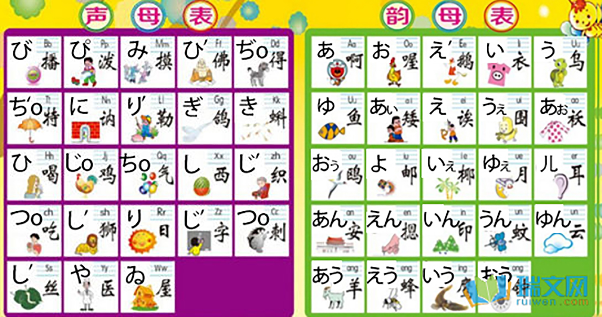
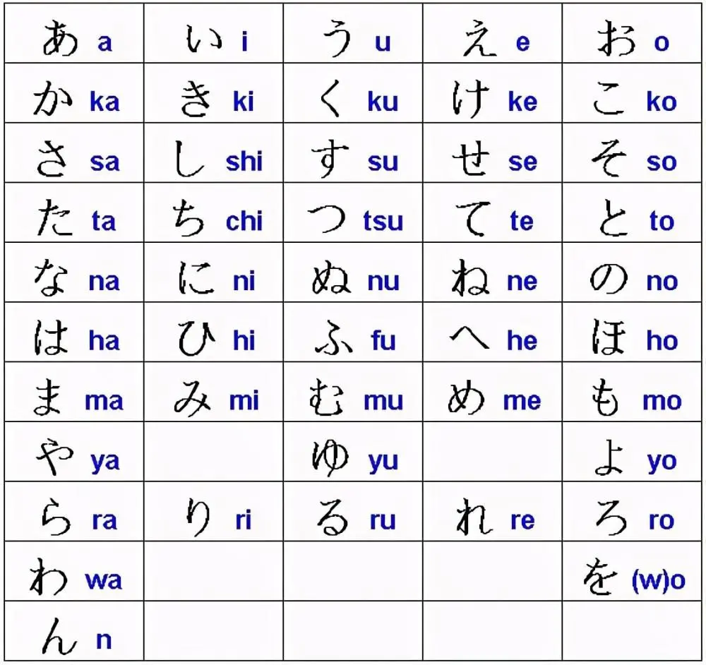
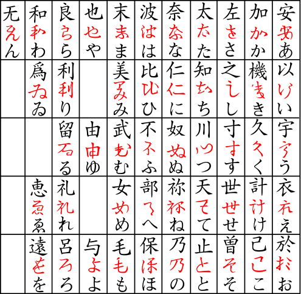
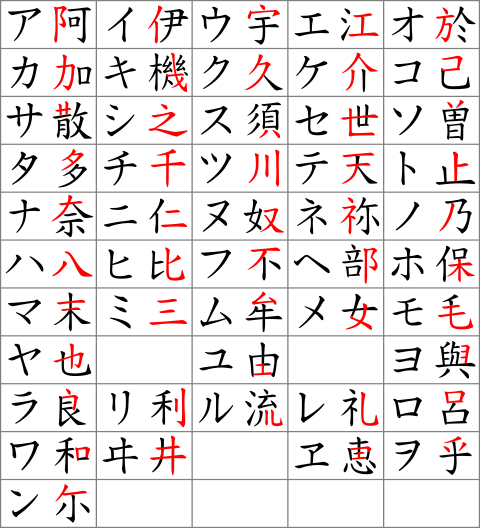

BurOak日语社大开张
中文
English
日本語
BurOak日语社
欢迎大家来这个日语社啦
其实创建这个社的本意是不纯的。一方面是跟臧某进行的军备竞赛（误，
另一方面其实是一个大型镀金工厂，毕竟...
找兼职的时候能很正直地说出：我有贼强的语言学习能力因为我参加过学校的日语社，所以我肯定能应对日本来的客人 肯定特别有竞争力吧ww
不过虽说如此，咱也不会把他当成一个镀金工厂来混日子的... 这个社很正经地啊喂！
不过话说来这个社的大部分都是中国人吧，所以说嘛就先把中文的网站给做了。倒不如说咱觉得只有中国人也不赖，因为中文扯淡总比英文扯淡好扯得多。
总之这就是前言啦。希望各位玩儿的开心。如果进行得不错的话12年级可能还会继续？但也可能不会，因为12年级就又有英语课了吧...
社里可能な讨论的东西：
动漫名场面语法分析
比如不要停下来，或者JoJo世界名画
分析具体干啥可以参照
这个网站
， 倒不如说就是因为刷到了这个网站才想到的这个点子。
分享一些怪东西
比如我知乎上那个
日语加密中文
，不过其实都是日常的一些小脑洞啦
一些奇怪的知识
这个是第一天我想讲下子的，就是日本全学联的ケバ字（与上世纪日本左翼运动有关，左壬狂喜）还有一些现存的俗字。
由于第一天应该都是中国人，所以就先把这个中国人友好的东西给讲了，是日语而且也不用太多日语知识。而且也可以顺便调查一下在座的日语知识什么的，来投石问路。
下面是一些部里可能会用到的图~

千万不要照着学的会把你发音引到歧途的本来是用来加密中文但咱还没到那一步的日
语汉语对音表，原文章可参考我首页的小广告（

很正常的平假名表
很正常的片假名表
 
流传很广说对记假名很有帮助然而我觉得除了没用之外完全没用的两个 汉字-假名 演化表